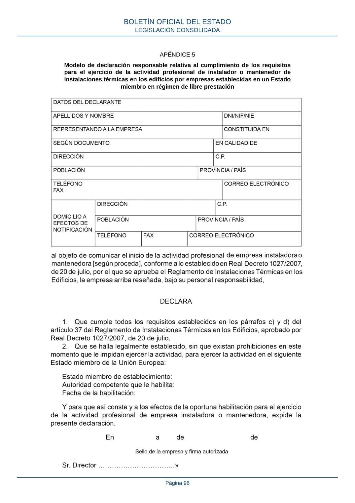
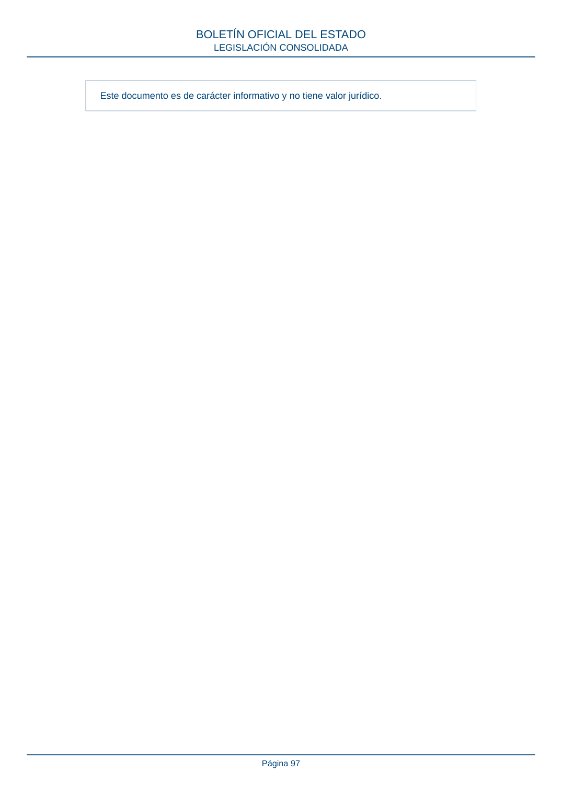

DB-HE2 RITE · edición 2022-08-02 · capa asociada
Documento RITE-asociada · SHA-256 del PDF ad1680c83bf4c7f5c656af1794c32ad0669ad9f36ac293737ff3f95177ff7b26
Copia fiel del PDF fuente · Fuente oficial
Ficha de la disposición en la fuente oficial
Texto extraído y reorganizado: Basado en datos de la Agencia Estatal Boletín Oficial del Estado. PDF reproducido: Fuente de los datos: Agencia Estatal Boletín Oficial del Estado.
Formatos: JSON del segmento · Markdown
APÉNDICE 5 Modelo de declaración responsable relativa al cumplimiento de los requisitos para el ejercicio de la actividad profesional de instalador o mantenedor de instalaciones térmicas en los edificios por empresas establecidas en un Estado miembro en régimen de libre prestación BOLETÍN OFICIAL DEL ESTADO LEGISLACIÓN CONSOLIDADA Página 96 Este documento es de carácter informativo y no tiene valor jurídico. BOLETÍN OFICIAL DEL ESTADO LEGISLACIÓN CONSOLIDADA Página 97

